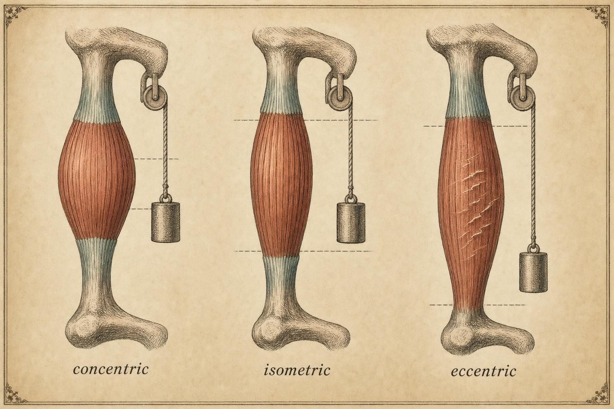
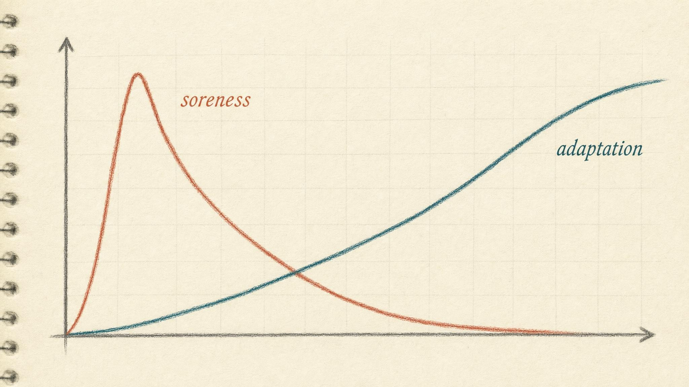

The Soreness Myth
Why the ache you trust most is the signal you should trust least.
Priya tries a new movement on Monday, walking lunges with a long, controlled descent, deeper than she usually goes. Tuesday morning she feels fine, maybe a little pleased with herself. Wednesday she cannot walk down a flight of stairs without gripping the rail, and every step delivers a dull, diffuse burn through her quadriceps that lingers for two more days. Somewhere in that stairwell, a story writes itself in her head: that was a great workout. The soreness feels like proof. It arrived late enough to seem mysterious, hurt enough to seem meaningful, and mapped cleanly onto the muscles she targeted. Of course it means something.
Priya is 34, has been strength training on her own for about a year, and keeps a notes app full of numbers: sets, reps, and, increasingly, a personal soreness scale from zero to ten that she jots down the morning after every session. She has quietly started chasing a number on that scale. A six or seven feels like a program working. A zero feels like wasted time, a session she coasts through and should have pushed harder. Nobody taught her this rule. She built it herself, one stairwell at a time, out of a sensation that felt too obviously informative to question.
The sensation does mean something. It just does not mean what Priya, or almost everyone else who has ever felt it, thinks it means. This chapter is about prying those two things apart, what delayed onset muscle soreness actually is, and the enormous freight of belief it drags behind it. By the end, Priya's soreness scale will still exist. What she does with the numbers on it is going to change completely.
A definition, stripped of mythology
Delayed onset muscle soreness (DOMS) is the tender, aching sensation and mechanical hyperalgesia that develops in skeletal muscle roughly 8 to 24 hours after unaccustomed exercise, peaks somewhere between 24 and 72 hours, and resolves within about a week (Cheung et al., 2003). The defining feature is in the name: the delay. Ordinary exertional discomfort, the acute burn during a hard set, arrives and departs with the effort itself, tracking the working muscle in real time. DOMS shows up after the shower, after dinner, after the session has already been filed away as finished, which is precisely why it feels like a hidden process surfacing rather than an ordinary consequence of exercise.
Hold that timing detail carefully, because it is doing more work than it appears to. A sensation that trails its cause by a full day, and that keeps building for two more days after that, is a poor candidate for a live readout of anything. You cannot feel a satellite cell fuse to a muscle fiber or a new sarcomere add in series while it happens. Adaptation is invisible and unfolds over days, sometimes weeks. Any felt sensation is therefore at best an indirect, secondhand signal of processes you cannot directly perceive, and DOMS, being loud, late, and emotionally satisfying, is the sensation almost everyone is tempted to over-read. The very delay that makes it feel profound and mysterious is the same delay that makes it a poor real-time instrument for judging a training session.
Let us be precise about what triggers it, because precision here is the whole foundation of the chapter. DOMS is overwhelmingly a response to two overlapping conditions: eccentric loading, meaning muscle lengthening under tension, and unaccustomed loading, meaning exercise your tissue has not recently encountered. Cleak and Eston (1992), in one of the foundational reviews on the topic, established the primacy of eccentric contraction as the trigger and catalogued the physiological theories that were on offer at the time, several of which we will revisit below because pieces of them survive in the modern account and other pieces have since been discarded. Proske and Morgan (2001) later clarified why eccentric work is mechanically distinct: lengthening contractions produce a delayed pattern of structural disruption within the muscle that concentric contractions (shortening under load) and isometric contractions (holding steady under load) largely do not produce to the same degree.
Think about what an eccentric contraction actually asks of a muscle. The muscle is being asked to generate force while it lengthens, which is mechanically closer to a controlled braking action than to a pushing or pulling action. Lower a weight slowly, descend deep into a lunge, run downhill, resist a barbell on the way down before pressing it back up, and in every case the muscle is absorbing and resisting motion rather than simply producing it. That braking demand is unevenly distributed across the fibers doing the work, and it is this uneven, high-tension lengthening pattern, more than the total work performed, that is the mechanical signature soreness tracks most reliably. A concentric-only session of similar total effort will typically leave far less of this particular ache behind, even though it may feel just as hard in the moment.

Eccentric contractions, muscle lengthening under load, are the mechanical signature DOMS tracks most closely." data-image-idx="0" style="display:block;max-width:100%;max-height:75vh;height:auto;width:auto;margin:0 auto;cursor:pointer;">Why does uneven lengthening produce more disruption than even shortening? Part of the explanation lives in the length-tension relationship of the sarcomere, the basic contractile unit of muscle. When a muscle is forced to lengthen while active, some sarcomeres along a fiber, particularly the weaker ones already sitting on a less favorable part of that relationship, are stretched well past their optimal overlap before the stronger sarcomeres in series with them catch up. Under repeated cycles of this uneven stretch, some sarcomeres are proposed to be pulled apart faster than they can re-interdigitate, a phenomenon researchers have described as sarcomeres popping. Whether that popping is the whole story or only part of it is a question we return to later in this chapter, because the tidy version of the mechanism turns out to be less settled than most gym floor explanations suggest.
What DOMS is not: four persistent claims
Most of what a learner believes about soreness is really a claim about what soreness indicates. Four of these claims are so common, and so wrong, that they deserve to be dismantled one at a time, because together they structure how people train, how they judge their own effort, and how they decide whether a program is working.
1. It is not lactic acid
The most durable myth in all of exercise folklore is that the delayed ache is caused by lactic acid pooling in the muscle overnight, waiting to be flushed out by a foam roller or a light jog. This is false, and it has been known to be false for decades, yet it persists because it sounds plausible and nobody ever corrected it out loud. Blood lactate returns to baseline within roughly an hour of exercise, long before soreness even begins to build. According to Cheung, Hume, and Maxwell (2003), the lactic acid hypothesis appears in the literature specifically so that it can be ruled out: the timeline does not fit, and isometric or concentric exercise that generates substantial lactate produces comparatively little soreness, while eccentric exercise that generates comparatively little lactate produces the most soreness of any modality studied. Lactate is a fuel and a signaling molecule the body actively uses, not a waste product pooling in the muscle, and it is certainly not the author of Priya's Wednesday stairwell.
2. It is not a readout of adaptation
This is the claim this course cares about most, so we will spend real time dismantling it below. The short version: soreness correlates poorly with the established markers of muscle damage, and worse still with the outcomes of training a learner actually wants, namely strength and hypertrophy (Schoenfeld and Contreras, 2013). Being sore does not certify that a muscle grew, and not being sore does not certify that it did not. Treating soreness as a scoreboard confuses a side effect of novelty with the thing training is actually trying to produce.
3. It is not a grade for the workout
Because soreness scales with novelty and eccentric emphasis rather than with training quality, it is trivially easy to manufacture on purpose or by accident. Change the exercise, add slow negatives, take a long layoff and return, and soreness spikes regardless of whether the session actually moved a learner toward their goal. A beginner is sore after nearly everything, simply because everything is new to their tissue. An advanced lifter running a well-matched, carefully progressed program may be productively training for months with minimal soreness, because their body has already adapted to the movements in that program. If soreness graded workout quality, the beginner's disorganized, improvised circuit would consistently outrank the advanced lifter's carefully periodized block. It does not, and nobody who understands the physiology would claim it should.
4. It is not the same thing as readiness
Finally, and this distinction organizes much of the back half of this course, soreness is not a measure of whether a learner is ready to train again. A person can be sore and fully capable of a productive session. A person can be entirely pain free and badly under-recovered on other axes altogether, such as accumulated sleep debt, systemic fatigue, or a stretch of life stress with no relation to the gym. We will treat readiness as a multi-signal construct later in this course, built from several inputs weighed together rather than any single feeling. For now, hold the boundary firmly: soreness is one input among many, and on its own it is a weak one.
The mechanism is genuinely unsettled
An honest chapter has to admit something uncomfortable here: nobody fully understands what causes DOMS, and the field has revised its story more than once. The classic account is a cascade. Eccentric loading mechanically disrupts the muscle at the level of the sarcomere and the surrounding connective tissue, that disruption triggers a local inflammatory response involving immune cells and signaling molecules, and the inflammatory and metabolic byproducts of that response sensitize the nerve endings that detect pain and pressure, called nociceptors, producing the delayed ache a day or two later. Hyldahl and Hubal (2013) give the modern molecular version of this cascade in detail: morphological disruption of the sarcomere, inflammatory signaling involving cytokines and immune cell infiltration, satellite cell activation as part of the repair process, and connective tissue remodeling within the extracellular matrix all feature somewhere in the response to unaccustomed eccentric exercise. Proske and Morgan (2001) proposed two candidate initiating events well before that molecular detail was available: damage to the excitation-contraction coupling system that links a nerve signal to a muscle contraction, and mechanical disruption at the level of the sarcomeres themselves, where overstretched sarcomeres are thought to pop and then fail to properly re-interdigitate on the next contraction.
Older accounts also leaned on a marker called creatine kinase, an enzyme normally kept inside muscle cells that leaks into the bloodstream when the cell membrane is disrupted. For years, a rise in blood creatine kinase after exercise was treated almost as proof of damage, and by extension as proof that soreness and damage were the same story told two ways. That simple equation has not held up well. Creatine kinase rises and falls on its own idiosyncratic timeline that often does not match the soreness timeline closely, individual people show enormously different creatine kinase responses to identical exercise for reasons that have more to do with genetics and prior training history than with how sore they feel, and a person can show a large creatine kinase elevation with modest soreness, or the reverse. Treating a single blood marker as a stand-in for felt soreness, or for either one as a stand-in for the tissue growth a learner actually cares about, turns out to be exactly the kind of oversimplification this chapter is trying to correct.
The tidy damage-then-inflammation story has other cracks as well, and they matter because they sever the last intuitive link people rely on. Mizumura and Taguchi (2016) reported that, in an animal model designed to isolate the mechanism, mechanical hyperalgesia, the hallmark heightened sensitivity to pressure that defines DOMS, could be produced without apparent microscopic muscle damage and without the overt signs of inflammation the classic cascade requires. They implicated neurotrophic factor pathways instead of straightforward tissue injury: a B2 bradykinin receptor and nerve growth factor (NGF) pathway, and a separate cyclooxygenase-2 (COX-2) and glial cell line-derived neurotrophic factor (GDNF) pathway, both of which appear to sensitize the sensory nerve fibers supplying muscle after lengthening contractions, essentially turning up the gain on pain signaling itself rather than reflecting the extent of any structural wreckage underneath. In other words, a meaningful part of the ache may be substantially a story about nerves being sensitized, not simply about tissue being broken. Hyldahl and Hubal (2013) are themselves explicit, even in their own detailed molecular review, that the full response remains incompletely understood and that multiple mechanisms likely operate together rather than any single pathway explaining the whole picture.
Why should this matter to a learner rather than a laboratory scientist? Because it severs the last intuitive link in the chain that soreness relies on to feel meaningful. If soreness can occur without much measurable tissue damage, and measurable damage can occur without soreness in proportion to it, then the sensation is not even a clean, reliable window onto the tissue disruption it is popularly supposed to represent, let alone onto the downstream adaptation that disruption is supposed to eventually produce. A learner reading soreness as a progress gauge is reading an instrument that is only loosely, unreliably connected to the engine it claims to describe, and in some cases may be responding to a different process altogether.
Despite the high incidence and prevalence of DOMS, the exact mechanisms, treatment strategies and impact on athletic performance remain uncertain.
Cheung, Hume, and Maxwell (2003)
The decisive dissociation: Damas et al. (2016)
If one study anchors this chapter, it is Damas and colleagues (2016), because it experimentally pried apart the two things almost everyone conflates: the damage-and-repair response and the actual growth response. The research team tracked integrated myofibrillar protein synthesis (MyoPS), the rate at which the body builds new contractile protein, alongside direct markers of structural muscle damage across ten weeks of progressive resistance training in previously untrained participants, using repeated muscle biopsies to see what was actually happening inside the tissue rather than relying on how anyone felt.
Here is the crucial finding, and it is worth reading slowly. Early in the training block, the phase where soreness and muscle damage markers were both at their highest, myofibrillar protein synthesis was strongly elevated, and that elevation was strongly correlated with the amount of measured muscle damage. On the surface it would be natural to celebrate: high synthesis, high damage, surely that must mean high growth. But that early protein synthesis did not predict the amount of hypertrophy participants eventually achieved. Why not? Because in that early, high-soreness phase, the elevated synthesis was largely directed at repairing damaged structures, replacing what the unaccustomed loading had disrupted, rather than building genuinely new contractile tissue on top of what already existed. Only later in the ten weeks, once muscle damage markers had become attenuated (meaning reduced, as the tissue adapted to the training), did myofibrillar protein synthesis become genuinely and reliably associated with the hypertrophy participants went on to show.
Read that again in plain terms, because it is the empirical spine the rest of this chapter leans on. The body's early, dramatic, soreness-accompanied response was mostly the sound of a repair crew undoing disruption, patching what novelty had torn, not a foreman laying new foundation. The signal that actually tracked eventual growth appeared after the damage, and by close extension the soreness, had already settled down. Damage and soreness are not the currency adaptation is paid in. If anything, according to Damas and colleagues (2016), high damage early in a training block looks more like a tax the body pays before its adaptive machinery is free to redirect toward growth rather than restoration.
This is why the claim soreness is not a proxy for adaptation is not merely a statement that the two correlate weakly across different people, although they do correlate weakly across people too. It is the stronger and more useful claim that, within a single training block, the very phase of maximum soreness is the phase where protein synthesis is least about growth and most about basic repair. The two curves are not just loosely related. For a meaningful stretch of any new training block, they are pointed in different directions entirely.
Why they diverge: novelty and the repeated bout effect
The widget's behavior above is not arbitrary. It is driven by one of the best-documented phenomena in exercise physiology: the repeated bout effect (RBE). A single prior bout of eccentric exercise confers substantial protection against damage and soreness from a subsequent similar bout. Do a session that leaves a learner unable to sit down comfortably, and the same session two weeks later will barely register, often producing only a fraction of the original soreness even at equal or greater load (McHugh, 2003; Proske and Morgan, 2001).
McHugh (2003) categorizes the proposed adaptations behind the repeated bout effect into three families: neural, mechanical, and cellular, and concludes that peripheral, non-neural mechanisms appear to predominate. These include the longitudinal addition of sarcomeres in series within a muscle fiber, which shifts the length-tension relationship so that fewer sarcomeres are forced onto the vulnerable, overstretched part of that curve during a subsequent bout, along with altered inflammatory responses that blunt the downstream cascade the second time around. There is also evidence for changes in how connective tissue within and around the muscle distributes force, spreading load more evenly and reducing the concentration of stress on any single weak point. This is the finding that ultimately dooms soreness as a usable progress meter: the adaptation itself abolishes the signal that supposedly measures it. As a learner becomes better adapted to a stimulus, the soreness that stimulus produces shrinks, often dramatically, well before the training benefit from that stimulus has stopped accruing. A learner using soreness as their gauge of progress would be watching their gauge fall toward zero at precisely the moment their body is succeeding most. The signal is inversely coupled to the very thing it is popularly supposed to measure.
This also explains a pattern almost every beginner notices and almost every beginner misreads. Novices are sore constantly, not because they are training brilliantly, but because everything is novel to their tissue. Every exercise in their first months is, physiologically, a first bout with no protective history behind it, so soreness after nearly any session is close to guaranteed regardless of how well the session was designed. Their dramatic, frequent soreness is a statement about their inexperience, not a certificate of their session quality. Schoenfeld and Contreras (2013) offer a useful reductio ad absurdum here: activities like marathon running and long-duration cycling reliably produce significant DOMS, particularly in the days after a first marathon or a long climb, while being close to the opposite of a hypertrophy stimulus. If soreness reliably meant growth, competitive endurance athletes, who are frequently and severely sore, would be among the most muscular people alive. They are not, and the mismatch is not a minor footnote, it is a clean demonstration that soreness and muscle growth are governed by different variables entirely.

As adaptation accrues, the repeated bout effect suppresses soreness, and the two curves move apart." data-image-idx="1" style="display:block;max-width:100%;max-height:75vh;height:auto;width:auto;margin:0 auto;cursor:pointer;">Why the same session soreness two different people so differently
Priya trains alongside a friend who does nearly identical sessions and is almost never sore, which used to make Priya suspect her friend was not working hard enough. The truth is less dramatic and more interesting. Soreness intensity varies substantially between individuals exposed to the same objective stimulus, and that variability has several identifiable sources, none of which have much to do with effort or work ethic.
Muscle fiber type composition plays a role. Fast-twitch fibers, which are recruited more heavily during high-force, high-velocity, and eccentric work, appear more susceptible to the kind of mechanical disruption associated with DOMS than slow-twitch fibers, so two people with different underlying fiber type distributions can walk away from an identical session with different soreness even if their training history and effort are matched. Training history matters enormously as well, and this is really the repeated bout effect operating at the level of a whole career rather than a single two-week window. A person with years of consistent, varied strength training behind them has accumulated protective adaptation across a much broader range of movement patterns than a person newer to structured training, so the same novel exercise may barely register for one and flatten the other for days.
There is also a psychological and perceptual dimension that is easy to dismiss but should not be. Pain perception itself varies between individuals for reasons connected to prior experience with exercise-related discomfort, general pain sensitivity, sleep quality, stress levels, and even how closely someone is paying attention to their body in the first place. A learner who checks in with their quadriceps every hour, mentally scanning for soreness the way Priya's notes app habit encourages her to do, will often report more soreness than someone doing an identical session who simply goes about their day and only notices the ache when it interferes with something specific, like taking the stairs. None of this means the soreness is imaginary or that attention manufactures it from nothing. It means the sensation sits at the intersection of a physical process and a perceptual one, and both halves vary from person to person in ways that have nothing to do with how well anyone's training is designed.
Sex, age, and even the specific muscle group involved add further variability the research literature has documented without fully explaining. None of these factors change the core lesson of this chapter. They simply reinforce it from another angle: if soreness varies this much between two people doing the identical session for reasons unrelated to training quality, then comparing your soreness to someone else's, or even to your own soreness from a different phase of training, was never a sound basis for judging whether either of you is training well.
The boundary that actually matters: soreness versus warning
Everything above argues that normal DOMS is low-information, a weak signal a learner should stop over-reading in either direction. But there is a category error running the opposite way that is far more dangerous than over-reading a harmless ache: dismissing a genuine warning sign as just soreness. This course is not a clinical or physical-therapy course, and nothing in it is a diagnosis of any kind. What this chapter can, and must, do is teach a learner to recognize when a sensation falls outside the recognizable profile of ordinary training soreness and warrants evaluation by a qualified professional rather than a foam roller and a shrug.
Ordinary DOMS has a recognizable fingerprint, and learning that fingerprint is the practical skill this section is trying to build. It is typically diffuse, spread broadly across a muscle belly rather than pinpointed to one exact spot. It is usually bilateral or symmetric when both sides of the body performed the same work. It lives clearly in the muscle itself, not concentrated in a joint. It follows the expected timeline, building gradually over a day or two after the triggering session, then resolving steadily within about a week. And it tends to ease with light movement and warmth rather than sharpen or worsen with gentle activity, which is one of the more reliable practical tests a learner can apply in the moment.
Sensations that break this fingerprint deserve a different response entirely, and deserve it promptly rather than after a few more days of waiting to see. Pain that is sharp rather than achy, that is localized to a joint or to one specific point rather than spread across a muscle, that appears during a movement as a distinct catch, stab, or give rather than building afterward, that is accompanied by swelling that worsens over successive days rather than gradually improving, that is markedly one-sided with no one-sided explanation such as an injury history, or that lingers well beyond the normal DOMS window of about a week, none of these belongs in the same category as ordinary training soreness, and none of them should be trained through on the assumption that it must be soreness simply because it followed exercise. The appropriate response to any of these is professional evaluation, not a foam roller, not a story about toughness, and not a soreness scale entry treated the same way as every other entry.
There is a further, rarer possibility worth naming explicitly, precisely because it is rare enough that people stop watching for it. In unusual cases, particularly after extremely intense or extended eccentric exercise in someone unaccustomed to it, muscle breakdown can be severe enough to produce a condition called rhabdomyolysis, in which muscle cell contents released into the bloodstream can strain the kidneys. Warning features that separate this from ordinary DOMS include severe, disproportionate swelling, dark, tea-colored urine, and pain far beyond what the triggering exercise would normally justify. This is not something a learner is expected to diagnose from a course chapter, and it is not something this course is equipped to diagnose either. It is included here for exactly one reason: to make the point concrete that rare but serious conditions can masquerade at first as unusually bad soreness, which is exactly why the boundary between ordinary DOMS and a warning sign is worth drilling until recognizing it becomes automatic rather than something a learner has to reason through under discomfort.
Case study: Priya and the number she stopped trusting
Run Priya's situation through this chapter and the pattern becomes easy to name. Her soreness scale was not measuring what she thought it was measuring. On the weeks she manufactured extra soreness through novelty, slow negatives on unfamiliar movements, or simply switching exercises before her body had adapted to the current ones, she was largely triggering first-bout effects rather than accumulating meaningful new training stress on top of a stable foundation. According to the logic Damas and colleagues (2016) established, a large share of the protein synthesis behind that soreness was doing repair work, not building genuinely new tissue. Meanwhile, on the weeks her soreness faded because her body had adapted to a now-familiar movement, the repeated bout effect McHugh (2003) describes was quietly suppressing the very signal she was using to judge whether those weeks counted. She had built a feedback loop that punished the consistency her training actually needed and rewarded the novelty that was undermining it.
None of this means Priya's fatigue after hard sessions, or her occasional aches, were imaginary or unworthy of attention. It means the specific number she was tracking, and the specific rule she had built around that number, was actively steering her away from the steady, well-matched, progressively loaded training that would have produced better results with less soreness over time, not more. The fix here is not for Priya to stop noticing how she feels. It is for her to stop treating a soreness score as a report card and start treating it as one weak, easily manufactured input, useful mainly for flagging when a session was more novel or more eccentrically demanding than she intended, and largely irrelevant otherwise.
It is worth being precise about where this chapter's authority ends here, because Priya's situation, like anyone's, could in principle involve something beyond ordinary training soreness. A learner reading this chapter cannot use it to rule out every possible explanation for a lingering ache, a strange asymmetry, or pain that behaves in a way this chapter has described as a warning sign rather than a normal pattern. What this chapter can do is give a learner an accurate model of ordinary DOMS and an accurate sense of when a sensation has stopped fitting that model. What it cannot do, and what no course, worksheet, or soreness-tracking habit can responsibly do, is diagnose a specific person's specific pain.
What Priya actually needed was not a better number to chase, and not a clinician either, since nothing in her situation matched the warning profile this chapter describes. What she needed was the model this chapter has been building: soreness is a coarse, easily manufactured, adaptation-suppressed signal, not a scoreboard, and a training program should be judged by whether its loads and volumes are progressing sensibly over months, not by how her quadriceps feel on a given Wednesday. She kept her soreness log. She simply stopped grading herself by it, and started using her actual training numbers, the weights and reps that were or were not climbing over time, as the record that mattered.
Putting soreness in its place
So what is soreness actually good for, if it is not a scoreboard, not a proxy for growth, and not a readiness gauge? It is a coarse confirmation that a learner did something unaccustomed or eccentrically demanding to a particular set of muscles. That is a real piece of information, and this chapter is not asking anyone to discard it entirely. It can flag when a session was more novel than intended, which is genuinely useful for a learner trying to understand their own program. It can help someone returning from a layoff calibrate how aggressively to reintroduce a movement they have not done in months, since a body that has lost its repeated bout protection will predictably respond more strongly to familiar exercises than it used to. Used this narrowly, soreness is a modest, honest signal doing exactly the small job it is capable of.
The trouble starts the moment soreness is asked to do more than that. Used as a single, noisy, easily manufactured, adaptation-suppressed measure of session quality or readiness, it will systematically mislead a learner in three specific ways this chapter has now traced end to end. It rewards novelty over the consistency that actually builds long-term progress. It punishes the very adaptation a learner is training to achieve, since the repeated bout effect quietly turns the signal down as training succeeds. And it tempts a learner to train through genuine warning signs while chasing an ache that was never the point in the first place, or conversely to sit out a perfectly good session because it happened to be pain free.
The recalibration this chapter asks of every learner is quiet, but it is total. Stop congratulating a workout for making you sore. Stop worrying that a pain-free session was wasted effort. Stop treating the absence of soreness as automatic permission to push harder and its presence as automatic prohibition to train at all. Soreness earns exactly one modest seat at the table, a weak signal to be weighed alongside sleep, performance trends, systemic fatigue, and load history, and it does not get to sit at the head of that table making decisions on its own. Priya's soreness log is still useful to her. It just stopped being the only thing on the page that mattered.
Key Takeaways
- DOMS is delayed (peaking 24 to 72 hours after exercise), diffuse muscle-belly discomfort triggered chiefly by eccentric and unaccustomed loading, not by lactic acid, which clears from the blood within about an hour.
- Soreness is not a proxy for adaptation. Damas et al. (2016) showed that early, high-soreness protein synthesis mostly reflects repair, not growth; hypertrophy-linked synthesis emerges only after muscle damage attenuates.
- The repeated bout effect means adaptation itself suppresses soreness, so soreness is inversely coupled to the very progress it is popularly imagined to signal (McHugh, 2003).
- The mechanism is genuinely unsettled: hyperalgesia can occur without clear damage or inflammation through neurotrophic pathways (Mizumura and Taguchi, 2016), further loosening any assumed link between the ache and the underlying tissue.
- Soreness intensity varies widely between people due to fiber type, training history, and pain perception, none of which reflect effort or program quality, so comparing soreness between individuals is not a meaningful exercise.
- Soreness is not the same thing as readiness. It is one weak input among several, never a green or red light on its own.
- Ordinary DOMS is diffuse, symmetric, muscle-centered, timeline-appropriate, and eases with light movement. Sharp, joint-centered, worsening, or lingering sensations warrant professional evaluation, never a training badge to push through.
If soreness is not the thing to chase, what should a learner actually do between hard sessions? The next chapter takes up active recovery, separating the modalities that genuinely support the return-to-training process from the ones that merely feel productive because they briefly dampen an ache we have now learned to distrust as a guide.
References
Cheung, K., Hume, P. A., & Maxwell, L. (2003). Delayed onset muscle soreness: Treatment strategies and performance factors. Sports Medicine, 33(2), 145-164. https://doi.org/10.2165/00007256-200333020-00005
Cleak, M. J., & Eston, R. G. (1992). Delayed onset muscle soreness: Mechanisms and management. Journal of Sports Sciences, 10(4), 325-341. https://doi.org/10.1080/02640419208729932
Damas, F., Phillips, S. M., Libardi, C. A., Vechin, F. C., Lixandrao, M. E., Jannig, P. R., Costa, L. A. R., Bacurau, A. V., Snijders, T., Parise, G., Tricoli, V., Roschel, H., & Ugrinowitsch, C. (2016). Resistance training-induced changes in integrated myofibrillar protein synthesis are related to hypertrophy only after attenuation of muscle damage. The Journal of Physiology, 594(18), 5209-5222. https://doi.org/10.1113/JP272472
Hyldahl, R. D., & Hubal, M. J. (2013). Lengthening our perspective: Morphological, cellular, and molecular responses to eccentric exercise. Muscle & Nerve, 49(2), 155-170. https://doi.org/10.1002/mus.24077
McHugh, M. P. (2003). Recent advances in the understanding of the repeated bout effect: The protective effect against muscle damage from a single bout of eccentric exercise. Scandinavian Journal of Medicine & Science in Sports, 13(2), 88-97. https://doi.org/10.1034/j.1600-0838.2003.02477.x
Mizumura, K., & Taguchi, T. (2016). Delayed onset muscle soreness: Involvement of neurotrophic factors. The Journal of Physiological Sciences, 66(1), 43-52. https://doi.org/10.1007/s12576-015-0397-0
Proske, U., & Morgan, D. L. (2001). Muscle damage from eccentric exercise: Mechanism, mechanical signs, adaptation and clinical applications. The Journal of Physiology, 537(2), 333-345. https://doi.org/10.1111/j.1469-7793.2001.00333.x
Schoenfeld, B. J., & Contreras, B. (2013). Is postexercise muscle soreness a valid indicator of muscular adaptations? Strength and Conditioning Journal, 35(5), 16-21. https://doi.org/10.1519/SSC.0b013e3182a61820